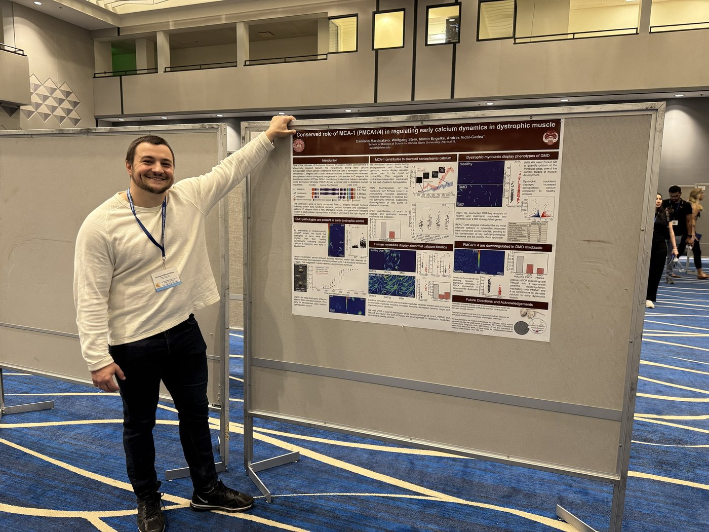
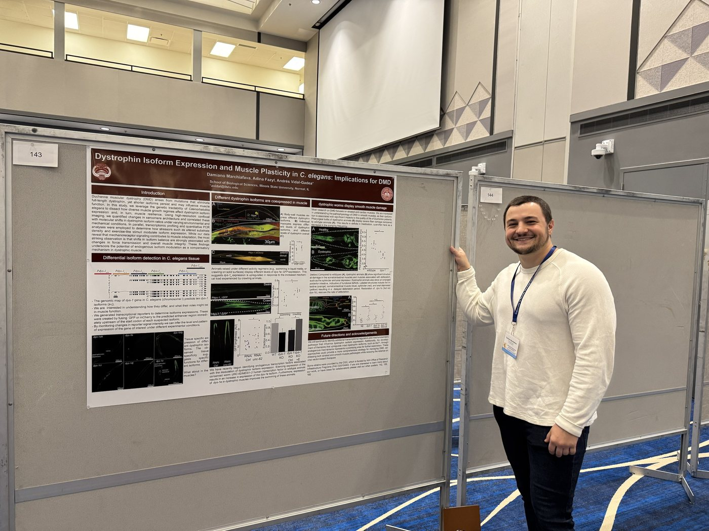

Presentations
175 posters and conference presentations since 2003, almost all of them presented by students, and the talks our trainees have given in departmental seminar series. This is the part of a lab's record that usually goes unpublished, so we publish it.
Author key. ° graduate student · * undergraduate · ** high school student. Red marks a poster or talk that won an award. Venues range from the International C. elegans Meeting and the Society for Neuroscience to the McLean County STEM Gala.

2026 (10)
Talks
- Jones M°. “Intracellular calcium kinetics in the musculature of freely moving animals.” Physiology, Neuroscience and Behavior Seminar, Illinois State University, 16 October.
- Marchiafava D°. “Calcium pumps drive elevated calcium in dystrophic muscle.” School of Biological Sciences Seminar Series (dissertation talk), Illinois State University, 24 September.
- Nidadavolu N°. “Characterization of smooth muscle pathophysiology in Duchenne muscular dystrophy.” Molecular and Cellular Biology Seminar, Illinois State University, 2 September.
Posters
- Perez-Rodriguez M*, Jones M°, Nidadavolu N°, Marchiafava D°, Vidal-Gadea AG. “Characterizing dystrophic C. elegans strains to study the pathogenesis of Duchenne muscular dystrophy.” Summer of Inquiry Symposium, Illinois State University, Normal, IL.
- Marchiafava D°, Vidal-Gadea AG. “Early dystrophic calcium elevation from C. elegans embryos to human myoblasts is linked to PMCA dysfunction.” Phi Sigma Research Symposium, Illinois State University, Normal, IL. Best graduate poster.
- Cheeseman E*, Fazyl A°, Ruscheinski G*, Vidal-Gadea AG. “Impacts of Duchenne muscular dystrophy on smooth muscle structure and function.” Phi Sigma Research Symposium, Illinois State University, Normal, IL. Best undergraduate poster.
- Jones M°, Vidal-Gadea AG. “Dynamic compartmental calcium analysis in Duchenne muscular dystrophy.” Phi Sigma Research Symposium, Illinois State University, Normal, IL.
- Muthukumar A*, Vidal-Gadea AG. “Studying Duchenne muscular dystrophy with the help of nematode worms.” Phi Sigma Research Symposium, Illinois State University, Normal, IL.
- Wilderman R*, Jones M°, Vidal-Gadea AG. “Investigating the impact of corticosteroids on smooth muscle in Duchenne muscular dystrophy.” University Research Symposium, Illinois State University, Normal, IL.
- Muthukumar A*, Vidal-Gadea AG. “Studying muscular dystrophy with nematode worms.” University Research Symposium, Illinois State University, Normal, IL.
- Jones M°, Vidal-Gadea AG. “Dynamic compartmental calcium analysis in Duchenne muscular dystrophy.” University Research Symposium, Illinois State University, Normal, IL.
- Cheeseman E*, Fazyl A°, Ruscheinski G*, Vidal-Gadea AG. “Impacts of Duchenne muscular dystrophy on smooth muscle structure and function.” University Research Symposium, Illinois State University, Normal, IL.
- Jones M°, Vidal-Gadea AG. “Dynamic compartmental calcium analysis in Duchenne muscular dystrophy.” Midwest C. elegans Meeting, Van Andel Institute, Grand Rapids, MI.
2025 (17)
Talks
- Jones M°. “Ordinary acts, a dystrophic challenge.” Three Minute Thesis, Departmental Seminar, Illinois State University.
- Jones M°. “Dynamic compartmental calcium analysis in Duchenne muscular dystrophy.” Physiology, Neuroscience and Behavior Seminar, Illinois State University.
- Ruscheinski G*, Cheeseman E*, Wilderman R*. “Exploring the effects of Duchenne muscular dystrophy on smooth muscle.” Physiology, Neuroscience and Behavior Seminar, Illinois State University.
- Marchiafava D°. “Elevated calcium in dystrophic muscle is associated with downregulation of the plasma membrane Ca2+ pump PMCA1.” Physiology, Neuroscience and Behavior Seminar, Illinois State University (two seminars).
- Akinosho A°. “Magnetosensation, hypomagnetic conditions, and transgenerational inheritance: insights from Caenorhabditis elegans.” Physiology, Neuroscience and Behavior Seminar, Illinois State University.
- Niha S°. “Deciphering neuronal expression and behavioral consequences of DYS-1B in C. elegans: insights into Duchenne muscular dystrophy.” Physiology, Neuroscience and Behavior Seminar, Illinois State University.
- Jones M°. “Investigating the role of dystrophin in neuromuscular communication.” Physiology, Neuroscience and Behavior Seminar, Illinois State University.
- Gomez M°. “Molecular mechanisms of action of corticosteroids in dystrophic muscles.” Physiology, Neuroscience and Behavior Seminar, Illinois State University.
Posters
- Ofurum F*, Cheeseman E*, Ruscheinski G*, Wilderman R*, Fransen H*, Aidoo E*, Fazyl A°, Vidal-Gadea AG. “Modeling the Effect of Duchenne Muscular Dystrophy on Smooth Muscles Using C. elegans.” Illinois State University, Normal, IL.
- Marchiafava D°, Jones M°, Fazyl A°, Wilderman R*, Fransen H*, Cheeseman E*, Ruscheinski G*, Stein W, Engelke M, Vidal-Gadea AG. “Conserved role of MCA-1 (PMCA1/4) in regulating early calcium dynamics in dystrophic muscle.” International C. elegans Meeting, UC Davis, CA.
- Marchiafava D°, Fazyl A°, Jones M°, Gomez M°, Vidal-Gadea AG. “Isoform Interventions: Harnessing Endogenous Dystrophin Variants to Restore Muscle Function.” Advances in Skeletal Muscle Biology, University of Florida, Gainesville, FL.
- Marchiafava D°, Fazyl A°, Jones M°, Gomez M°, Vidal-Gadea AG. “Harnessing Endogenous Dystrophin Isoforms to Ameliorate Duchenne Muscular Dystrophy.” Advances in Skeletal Muscle Biology, University of Florida, Gainesville, FL.
- Fazyl A°, Marchiafava D°, Vidal-Gadea AG. “Dystrophin Isoform Expression and Muscle Plasticity in C. elegans: Implications for DMD.” Advances in Skeletal Muscle Biology, University of Florida, Gainesville, FL.
- Marchiafava D°, Fazyl A°, Engelke M, Stein W, Vidal-Gadea AG. “Conserved Roles of MCA-1 and PMCA in Regulating Early Calcium Dynamics in Muscle.” Advances in Skeletal Muscle Biology, University of Florida, Gainesville, FL.
- Jones M°, Vidal-Gadea AG. “Investigating the role of dystrophin in motor neuron function, a deeper dive into the neuronal pathology of Duchenne muscular dystrophy.” Graduate School Symposium, Illinois State University, Normal, IL.
- Gomez M°, Vidal-Gadea AG. “Corticoid steroid effect and pathways in C. elegans.” Graduate School Symposium, Illinois State University, Normal, IL.
- Fransen H*, Fazyl A°, Niha S°, Vidal-Gadea AG. “Investigating the role of dystrophin in smooth and striated muscles of C. elegans.” Graduate School Symposium, Illinois State University, Normal, IL.
- Batchelor P*, Fazyl A°, Vidal-Gadea AG. “Understanding the role of dystrophin isoforms on muscle function in the nematode C. elegans.” Graduate School Symposium, Illinois State University, Normal, IL.
- Wilderman R*, Fazyl A°, Vidal-Gadea AG. “Role of dystrophin isoforms in smooth muscle function during Duchenne muscular dystrophy.” Graduate School Symposium, Illinois State University, Normal, IL.
- Dunaway A*, Fazyl A°, Niha S°, Vidal-Gadea AG. “Therapeutic potential of short dystrophin isoforms in Duchenne muscular dystrophy.” Graduate School Symposium, Illinois State University, Normal, IL.
- Awe T°, Vidal-Gadea AG. “Subcellular localization of candidate magnetoreceptor molecules in C. elegans.” Graduate School Symposium, Illinois State University, Normal, IL.
- Awe T°, Vidal-Gadea AG. “Subcellular localization of candidate magnetoreceptor molecules in C. elegans.” Phi Sigma Biology Symposium, Illinois State University, Normal, IL.
- Marchiafava D°, Vidal-Gadea AG. “Downregulation of the plasma membrane Ca2+ pump, PMCA1, in dystrophic muscles precedes cytosolic calcium dysregulation.” Phi Sigma Biology Symposium, Illinois State University, Normal, IL.
- Jones M°, Vidal-Gadea AG. “Characterizing the effect of RU486 on embryonic development.” Phi Sigma Biology Symposium, Illinois State University, Normal, IL.
- Gomez M°, Aidoo E*, Vidal-Gadea AG. “Investigating effects and non-inflammatory pathways of corticosteroids used to treat Duchenne Muscular Dystrophy in C. elegans.” Phi Sigma Biology Symposium, Illinois State University, Normal, IL.

2024 (16)
- Chauhan M, Engelke M, Hyun Kim J, Vidal-Gadea AG, Baral S, Manna U. “Development of an apical TIRF-illumination super-resolution microscope for cell biology research.” Graduate School Symposium, Illinois State University, Normal, IL.
- Seymour M°, Vidal-Gadea AG, Stein W. “Establishing genome editing in the Marbled crayfish.” Society for Neuroscience Annual Meeting, Chicago, IL.
- Seymour M°, Vidal-Gadea AG, Stein W. “Establishing genome editing in the Marbled crayfish.” Graduate School Symposium, Illinois State University, Normal, IL.
- Seymour M°, Vidal-Gadea AG, Stein W. “Establishing genome editing in the Marbled crayfish.” Phi Sigma Annual Symposium, Illinois State University, Normal, IL.
- Niha S°, Fazyl A°, Vidal-Gadea AG. “Identifying neuronal expression and function of dystrophin in the nervous system of the nematode C. elegans.” Graduate School Symposium, Illinois State University, Normal, IL.
- Kollbaum S**, Fazyl A°, Vidal-Gadea AG. “First description of sarcomere branching in the musculature of the nematode C. elegans.” Graduate School Symposium, Illinois State University, Normal, IL.
- Awe T°, Akinosho A°, Adams J, Niha S°, Stein W, Vidal-Gadea AG. “The potential role of C. elegans AMsh glia in coordination of escape responses to aversive stimuli.” Graduate School Symposium, Illinois State University, Normal, IL.
- Aidoo E*, Hughes K°, Hyer A*, Vidal-Gadea AG. “Effects of corticosteroids Prednisone and Deflazacort on the calcium kinetics of dystrophic muscles.” Graduate School Symposium, Illinois State University, Normal, IL.
- Gomez L**, Mobile Z°, Vidal-Gadea AG, Follmann R, Rosa E. “Model equations for C. elegans thermotaxis.” Graduate School Symposium, Illinois State University, Normal, IL.
- Fazyl A°, Komandur A**, Vidal-Gadea AG. “The mechanoreceptor PEZO-1 is required for normal muscle function and plasticity in the striated musculature of the nematode C. elegans.” Graduate School Symposium, Illinois State University, Normal, IL.
- Akinosho A°, Awe T°, Fazyl A°, Vidal-Gadea AG. “The nematode C. elegans detects magnetic fields using an iron-dependent transduction mechanism.” Graduate School Symposium, Illinois State University, Normal, IL.
- Awe T°, Akinosho A°, Adams J, Niha S°, Stein W, Vidal-Gadea AG. “The role of AMsh glia of C. elegans in termination of touch-induced escape responses.” Phi Sigma Symposium, Illinois State University, Normal, IL.
- Niha S°, Fazyl A°, Vidal-Gadea AG. “Deciphering neuronal expression and behavioral consequences of dystrophin in C. elegans: Insights into Duchenne Muscular Dystrophy.” Phi Sigma Symposium, Illinois State University, Normal, IL.
- Seymour M°, Vidal-Gadea AG, Stein W. “Establishing Genome Editing in Marbled Crayfish.” Phi Sigma Symposium, Illinois State University, Normal, IL.
- Fazyl A°, Komandur A**, Vidal-Gadea AG. “The mechanoreceptor PEZO-1 is necessary for adapting muscle function and ensuring plasticity in the striated muscles of C. elegans.” Phi Sigma Symposium, Illinois State University, Normal, IL.
- Marchiafava D°, Jazireian P°, Vidal-Gadea AG. “Understanding calcium dynamics in dystrophic muscle.” Phi Sigma Symposium, Illinois State University, Normal, IL.
2023 (26)
- Akinosho A°, Vidal-Gadea AG. “Investigation of the mechanisms of magnetic transduction by C. elegans.” Phi Sigma Symposium, Illinois State University, Normal, IL.
- Roy R°, Vidal-Gadea AG, Stein W. “Identification of gap junction genes involved in the tail-flip escape circuit of marbled crayfish.” Phi Sigma Symposium, Illinois State University, Normal, IL.
- Aidoo E*, Vidal-Gadea AG. “Determining Molecular Targets of Corticosteroid Mediated Improvement of Dystrophic Muscles.” Graduate School Symposium, Illinois State University, Normal, IL.
- Awe T°, Vidal-Gadea AG. “The AMsh glia of C. elegans modulates touch-induced escape responses.” Society for Neuroscience Meeting, Washington DC.
- Fazyl A°, Vidal-Gadea AG. “Co-expression of multiple dystrophin isoforms in striated muscle.” Advances in Skeletal Muscle Biology Conference, University of Florida, Gainesville, FL.
- Niha S°, Fazyl A°, Vidal-Gadea AG. “Function of dystrophin isoforms in the nervous system.” Phi Sigma Symposium, Illinois State University, Normal, IL.
- Akinosho A°, Vidal-Gadea AG. “Investigation of the mechanisms of magnetic transduction by C. elegans.” SACNAS NDISTEM Conference, Portland, OR.
- Marchiafava D°, Engelke M, Vidal-Gadea AG. “Investigating calcium dynamics in early dystrophic human myocytes.” Advances in Skeletal Muscle Biology Conference, University of Florida, Gainesville, FL.
- Jazireian P°, Vidal-Gadea AG. “Pathophysiological changes during myogenesis in dystrophic muscles.” Advances in Skeletal Muscle Biology Conference, University of Florida, Gainesville, FL.
- Aidoo E*, Vidal-Gadea AG. “Determining Molecular Targets of Corticosteroid Mediated Improvement of Dystrophic Muscles.” NexSTEM Symposium, Heartland Community College, Normal, IL.
- Awe T°, Vidal-Gadea AG. “The Molecular Mechanism of AMsh Glia Response to Touch in C. elegans.” Midwest C. elegans Meeting, Wayne State University, Detroit, MI.
- Akinosho A°, Vidal-Gadea AG. “Investigation of the mechanisms of magnetic transduction by C. elegans.” Graduate School Symposium, Illinois State University, Normal, IL.
- Fazyl A°, Vidal-Gadea AG. “Distinct functional responsibilities of various dystrophin isoforms in striated muscle.” Phi Sigma Symposium, Illinois State University, Normal, IL.
- Aidoo E*, Vidal-Gadea AG. “Determining Molecular Targets of Corticosteroid Mediated Improvement of Dystrophic Muscles.” Midwest C. elegans Meeting, Wayne State University, Detroit, MI.
- Niha S°, Vidal-Gadea AG. “Neuronal expression of dystrophin and its role in regulating behavior in C. elegans.” Fourth Chicago Area Worm Meeting, University of Illinois, Chicago, IL.
- Marchiafava D°, Engelke M, Vidal-Gadea AG. “Investigating calcium dynamics in early dystrophic human myocytes.” Phi Sigma Symposium, Illinois State University, Normal, IL.
- Jazireian P°, Vidal-Gadea AG. “Physiological Alterations in Muscles During Myogenesis in Dystrophic Conditions.” Midwest C. elegans Meeting, Wayne State University, Detroit, MI.
- Awe T°, Vidal-Gadea AG. “Caenorhabditis elegans amphid sheath glia modulates touch-induced escape responses.” Phi Sigma Symposium, Illinois State University, Normal, IL.
- Fazyl A°, Vidal-Gadea AG. “Uncovering the different functional roles of dystrophin isoforms in striated muscle.” Graduate School Symposium, Illinois State University, Normal, IL.
- Niha S°, Vidal-Gadea AG. “Function of dystrophin isoforms in the nervous system.” Graduate School Symposium, Illinois State University, Normal, IL.
- Marchiafava D°, Engelke M, Vidal-Gadea AG. “Pathophysiological changes during myogenesis in dystrophic muscles.” American Society for Cell Biology Meeting, Boston, MA.
- Jazireian P°, Vidal-Gadea AG. “Pathophysiological alterations in dystrophic muscles during myogenesis.” Graduate School Symposium, Illinois State University, Normal, IL.
- Awe T°, Vidal-Gadea AG. “The AMsh glia modulate touch-induced escape responses in C. elegans.” Graduate School Symposium, Illinois State University, Normal, IL.
- Fazyl A°, Vidal-Gadea AG. “Dystrophin isoform co-expression patterns and functional roles in striated muscles.” Fourth Chicago Area Worm Meeting, University of Illinois, Chicago, IL.
- Niha S°, Vidal-Gadea AG. “Function of dystrophin isoforms in the nervous system.” Midwest C. elegans Meeting, Wayne State University, Detroit, MI.
- Fazyl A°, Vidal-Gadea AG. “Investigating the expression and function of dystrophin isoforms in musculature.” Midwest C. elegans Meeting, Wayne State University, Detroit, MI.
2022 (10)
- Aidoo E*, Vidal-Gadea AG. “Determining Molecular Targets of Corticosteroid Mediated Improvement of Dystrophic Muscles.” NexSTEM Symposium, Heartland Community College, Normal, IL.
- Sawilchik E*, Hughes-Wiles K°, Vidal-Gadea AG. “Neuronal reduction in long pezo-1 isoform expression leads to food accumulation in the anterior intestinal tract of C. elegans.” Phi Sigma Symposium, Illinois State University, Normal, IL.
- Aidoo E*, Hughes-Wiles KJ°, Vidal-Gadea AG. “Molecular mechanisms responsible for the corticosteroid-mediated improvement of dystrophic muscles.” Phi Sigma Symposium, Illinois State University, Normal, IL. First prize, poster.
- Roy R°, Stein W, Vidal-Gadea AG. “Identification of gap junction genes involved in the tail-flip escape circuit of marbled crayfish.” Phi Sigma Symposium, Illinois State University, Normal, IL.
- Hughes-Wiles KJ°, Shah A*, Bai X, Adams J, Bauer R, Jackson J*, Bainbridge C°, Harris E*, Ficca A**, Freebairn P°, Mohammed S*, Fernandez EM°, Brocco MA, Stein W, Vidal-Gadea AG. “Long isoforms of the mechanoreceptor pezo-1 are involved in feeding in C. elegans.” Phi Sigma Symposium, Illinois State University, Normal, IL.
- Awe T°, Adams J, Oblinger-Hammond D*, Vidal-Gadea AG. “mec-12 is required for the sensory response to touch of Caenorhabditis elegans amphid sheath glia.” Phi Sigma Symposium, Illinois State University, Normal, IL.
- Awe T°, Adams J, Oblinger-Hammond D*, Vidal-Gadea AG. “Sensory response to touch of Caenorhabditis elegans Amphid Sheath is dependent on the expression of mec-12 gene.” Graduate School Symposium, Illinois State University, Normal, IL.
- Aidoo E*, Hughes-Wiles KJ°, Vidal-Gadea AG. “Identifying molecular targets of steroids on Duchenne muscular dystrophy patients.” NexSTEM Alliance Symposium, Heartland Community College, Normal, IL.
- Zack T*, Hughes-Wiles KJ°, Vidal-Gadea AG. “Muscular dystrophy: the connection between humans and C. elegans.” NexSTEM Alliance Symposium, Heartland Community College, Normal, IL.
- Awe T°, Vidal-Gadea AG. “Alpha-tubulin MEC-12 and TRPV channel OSM-9 are required for amphid sheath response to nose-touch in Caenorhabditis elegans.” SACNAS NDISTEM Conference, San Juan, Puerto Rico.
2021 (16)
- Awe T°, Bainbridge C°, Freebairn P°, Vidal-Gadea AG. “Resolving between two models of magnetic particle-based mechanisms of magnet stimulus transduction in C. elegans.” Chicago Area Worm Meeting, Chicago, IL.
- Hughes KJ°, Rivera B°, Killian E*, Carlock P**, Ahmed H**, Leonard N**, Vidal-Gadea AG. “Understanding the early pathophysiology of Duchenne muscular dystrophy in a nematode model.” Chicago Area Worm Meeting, Chicago, IL.
- Rivera B°, Adams J, Hughes KJ°, Sawilchick E*, Aidoo E*, Gantert J**, Carlock P**, Vidal-Gadea AG. “Generation of in vivo humanized nematode and in vitro human myocyte culture systems for the study of muscular dystrophy.” Chicago Area Worm Meeting, Chicago, IL.
- Fernandez EM°, Cutraro Y, Monteleone M, Hughes KJ°, Vidal-Gadea AG, Brocco M. “Investigating the neuronal membrane glycoprotein 1 role using Caenorhabditis elegans.” Chicago Area Worm Meeting, Chicago, IL.
- Awe T°, Bainbridge C°, Freebairn P°, Vidal-Gadea AG. “Investigating a potential magnetocaloric mechanism for magnetic field transduction by C. elegans.” Society for Neuroscience, Chicago, IL.
- Fernandez EM°, Cutraro Y, Adams J, Monteleone M, Hughes KJ°, Vidal-Gadea AG, Brocco M. “C. elegans as tool to study chronic stress effects.” Society for Neuroscience, Chicago, IL.
- Awe T°, Freebairn P°, Bainbridge C°, Vidal-Gadea AG. “Cellular localization of iron-handling proteins required for magnetic orientation in C. elegans.” University Research Symposium, Illinois State University, Normal, IL.
- Hughes KJ°, Shah A*, Bai X, Adams J, Bauer R, Jackson J*, Bainbridge C°, Harris E*, Ficca A**, Freebairn P°, Mohammed S*, Fernandez EM°, Brocco MA, Stein W, Vidal-Gadea AG. “Long isoforms of mechanoreceptor pezo-1 control pharyngeal gland cell activity in the nematode Caenorhabditis elegans.” Annual Midwest C. elegans Meeting, Michigan State University, MI.
- Tamrazi M°, Vidal-Gadea AG. “Genes that slow down degeneration in dystrophic muscles.” Annual Midwest C. elegans Meeting, Michigan State University, MI.
- Awe T°, Vidal-Gadea AG. “Iron-handling proteins and mechanoreceptors are required for magnetic orientation in C. elegans.” Annual Midwest C. elegans Meeting, Michigan State University, MI.
- Mobille Z°, Follmann R, Vidal-Gadea AG, Rosa E. “Mathematical modeling of temperature effects on the AFD neuron of C. elegans.” Phi Sigma Symposium, Illinois State University, Normal, IL.
- Awe T°, Freebairn P°, Bainbridge C°, Vidal-Gadea AG. “Expression pattern of iron-handling proteins required for magnetic orientation in C. elegans.” Phi Sigma Symposium, Illinois State University, Normal, IL.
- Roy R°, Stein W, Vidal-Gadea AG. “Development of genetic tools in marbled crayfish for the study of neuromodulation.” Phi Sigma Symposium, Illinois State University, Normal, IL.
- Hughes KJ°, Shah A*, Bai X, Adams J, Bauer R, Jackson J*, Bainbridge C°, Harris E*, Ficca A**, Freebairn P°, Mohammed S*, Fernandez EM°, Brocco MA, Stein W, Vidal-Gadea AG. “Long isoforms of mechanoreceptor pezo-1 control pharyngeal gland cell activity in the nematode Caenorhabditis elegans.” Phi Sigma Symposium, Illinois State University, Normal, IL.
- Hughes KJ°, Tamrazi M°, Rivera B°, Vidal-Gadea AG. “C. elegans offers a unique window into early pathophysiology of Duchenne muscular dystrophy.” International C. elegans Meeting, UCLA, CA.
- Hughes KJ°, Shah A*, Bai X, Adams J, Bauer R, Jackson J*, Bainbridge C°, Harris E*, Ficca A**, Freebairn P°, Mohammed S*, Fernandez EM°, Brocco MA, Stein W, Vidal-Gadea AG. “Distinct mechanoreceptor pezo-1 isoforms modulate food intake in the nematode Caenorhabditis elegans.” International C. elegans Meeting, UCLA, CA.
2020 (1)
- Hughes KJ°, Rodriguez A°, Flatt KM°, Ray S, Schuler A*, Rodemoyer B*, Veerappan V°, Cuciarone K*, Kullman A**, Lim C**, Gutta N**, Vemuri S*, Andriulis V*, Niswonger D*, Barickman L*, Stein W, Singhvi A, Schroeder NE, Vidal-Gadea AG. “Muscular exertion is detrimental to viability in a nematode model of Duchenne muscular dystrophy.” Chicago Area Worm Meeting, Chicago, IL.
2019 (7)
- Owoyemi T*, Owoyemi K*, Vidal-Gadea AG. “High throughput analysis of magnetic orientation using the nematode C. elegans.” Chicago Area Worm Meeting, Chicago, IL.
- Gährs C°, Stein W, Vidal-Gadea AG. “Characterization of serotonin receptor expression in the marbled crayfish stomatogastric ganglion.” Graduate Research Symposium, Illinois State University, Normal, IL.
- Ahmed H**, Hughes KJ°, Vidal-Gadea AG. “Calcium dysregulation in a C. elegans model of Duchenne Muscular Dystrophy.” Chicago Area Worm Meeting, Chicago, IL.
- Vidal-Gadea AG, Gährs C°, Staedele C, Coutinho V, Lyko F, Stein W. “Developing the marbled crayfish as a novel genetic model system for the study of neural network dynamics.” New Genetic Tools for Non-Model Organisms, Janelia Research Campus, Ashburn, VA.
- Hughes KJ°, Rodriguez A°, Flatt KM°, Ray S, Schuler A*, Rodemoyer B*, Veerappan V°, Cuciarone K*, Kullman A**, Lim C**, Gutta N**, Vemuri S*, Andriulis V*, Niswonger D*, Barickman L*, Stein W, Singhvi A, Schroeder NE, Vidal-Gadea AG. “Muscular exertion exacerbates decline in an animal model of Duchenne muscular dystrophy.” MDA Clinical and Scientific Conference, Orlando, FL.
- Gährs C°, Stein W, Vidal-Gadea AG. “Characterization of serotonin receptors in the pyloric circuit of the stomatogastric ganglion.” 20th Annual Phi Sigma Research Symposium, Illinois State University, Normal, IL.
- Hughes KJ°, Rodriguez A°, Flatt KM°, Ray S, Schuler A*, Rodemoyer B*, Veerappan V°, Cuciarone K*, Kullman A**, Lim C**, Gutta N**, Vemuri S*, Andriulis V*, Niswonger D*, Barickman L*, Stein W, Singhvi A, Schroeder NE, Vidal-Gadea AG. “Physical exertion in a nematode model of Duchenne muscular dystrophy exacerbates degeneration.” Graduate Research Symposium, Normal, IL.
2018 (19)
- Benefield Z*, Willis B*, Fritz A*, Barickman L*, Vidal-Gadea AG. “Effects of Martian physics on terrestrial organisms.” Chicago Area Worm Meeting, Chicago, IL.
- Hughes K°, Rodriguez AM°, Tragesser K*, Schweickert J*, Kullman A**, Vidal-Gadea AG. “C. elegans as a neurological model for Duchenne Muscular Dystrophy.” Chicago Area Worm Meeting, Chicago, IL.
- Owoyemi T*, Owoyemi K*, Paluzzi B*, Bainbridge C°, Hall D, Vidal-Gadea AG. “The search for magnetic particles in C. elegans.” Illinois LSAMP Symposium, Lisle, IL.
- Gährs C°, Benson A°, Stein W, Vidal-Gadea AG. “Transgenic crustaceans: adaptation of modern molecular technology to the study of neural function in decapods.” Genes, Brain and Behavior Meeting, Rochester, MN.
- Benson A°, Gährs C°, Vidal-Gadea AG, Stein W. “Behavioral consequences of RNAi-mediated suppression of electrical coupling in Marbled crayfish.” Graduate Research Symposium, Normal, IL.
- Benefield Z*, Willis B*, Vidal-Gadea AG. “Effects of the Mars magnetic field on survival rates in C. elegans.” McLean County STEM Gala, Normal, IL.
- Lim C**, Singaraju S**, Malavia M**, Rodriguez AM°, Vidal-Gadea AG. “Swimming delays loss of mobility in animals modeling Duchenne muscular dystrophy.” McLean County STEM Gala, Normal, IL.
- Kullman A**, Gutta N**, Sathyamurthy L**, Rodriguez AM°, Vidal-Gadea AG. “The effect of varying the level of exercise on animals modeling muscular dystrophy.” McLean County STEM Gala, Normal, IL.
- Bainbridge C°, McDonald J*, Benefield Z*, Barickman L*, Stein W, Vidal-Gadea AG. “Optimization of behavioral search strategies to cues of distinct physical natures.” Genes, Brain and Behavior Meeting, Rochester, MN.
- Risi G°, Ausmus E*, Salinas G, Vidal-Gadea AG. “Development of a novel assay to identify genes involved in host infection by parasitic nematodes.” Chicago Area Worm Meeting, Chicago, IL.
- Owoyemi T*, Owoyemi K*, McDonald J*, Barickman L*, Vidal-Gadea AG. “The search for magnetic particles in C. elegans.” Chicago Area Worm Meeting, Chicago, IL.
- Villarreal M*, Goel S*, Seitz N*, Vidal-Gadea AG, Edwards K. “Characterizing dystrophin's organization and functional network in Drosophila egg chamber development.” Society for Developmental Biology Meeting, Portland, OR.
- Gährs C°, Benson A°, Stein W, Vidal-Gadea AG. “Construction of molecular tools for the study of gene and neural function in decapods.” Graduate Research Symposium, Normal, IL.
- Bainbridge C°, Caldart C°, Clites B°, Palacios B, Bakhtiari L, Stein W, Golombek A, Pierce J, Vidal-Gadea AG. “Investigating internal state driven decision making using C. elegans magnetic orientation.” Graduate Symposium, Normal, IL.
- Hughes K°, Ahlers S*, Arteman C*, Burdette H*, Hanrahan D*, Kurczewski J*, Malinski J*, Melvin R*, Mota J*, Niswonger D*, Olszowy P*, Omotunwashe S*, Packard C*, Penza M*, Perry R*, Robledo S*, Shawd K*, Smith T*, Webb T*, Westbrook M*, Winter H*, Vidal-Gadea AG. “Using C. elegans to teach the genetic basis of disease and behavior.” Chicago Area Worm Meeting, Chicago, IL.
- Benson A°, Gährs C°, Vidal-Gadea AG, Stein W. “Behavioral effects of RNAi-mediated silencing of gap junction proteins in Marbled crayfish.” Genes, Brain and Behavior Meeting, Rochester, MN.
- Jackson J*, Patel P*, Ahssan U*, Vidal-Gadea AG. “The role of the nematode homolog of the mechanoreceptor PIEZO2 (pezo-1) in proprioception.” Illinois LSAMP Symposium, Lisle, IL.
- Burrell N*, Ashford M*, Collins M*, Rasmussen S*, Khalil M*, Vidal-Gadea AG. “Construction of RNA interference plasmids to silence isoforms of herc-1 in C. elegans to investigate Angelman Syndrome.” Illinois LSAMP Symposium, Lisle, IL.
- Risi G°, Ausmus E*, Salinas G, Vidal-Gadea AG. “Development of a novel assay to identify genes involved in host infection by parasitic nematodes.” Genes, Brain and Behavior Meeting, Rochester, MN.
2017 (14)
- Tragesser K*, Rodriguez AM°, Vidal-Gadea AG. “Modeling the neurological effects of Duchenne Muscular Dystrophy.” BSSA Symposium, Normal, IL.
- Sutter B*, Vidal-Gadea AG. “Role of mechanoreceptors in the production of rhythmic locomotion.” BSSA Symposium, Normal, IL.
- Bainbridge C°, McDonald J*, Benefield Z*, Padia S*, Barickman L*, Jackson J*, Hall D, Vidal-Gadea AG. “Investigation of the behavioral and cellular basis for magnetotaxis in C. elegans.” International C. elegans Meeting, UCLA, CA.
- Gährs C°, Benson A°, Städele C°, Stein W, Vidal-Gadea AG. “Marbled crayfish: a new genetic model organism for understanding neuromodulator influence on network dynamics.” Society for Neuroscience, Chicago Chapter, Chicago, IL.
- Benson A°, Städele C°, Gährs C°, Vidal-Gadea AG, Stein W. “Behavioral consequences of RNAi-mediated suppression of innexin gene expression in Marbled Crayfish.” Graduate Research Symposium, Normal, IL.
- Bainbridge C°, McDonald J*, Benefield Z*, Padia S*, Vidal-Gadea AG. “Behavioral motifs for magnetic orientation in the nematode C. elegans.” Graduate Symposium, Normal, IL.
- Megeff B*, Haines K*, Vidal-Gadea AG. “Angelman Syndrome.” Graduate Symposium, Normal, IL.
- Bainbridge C°, McDonald J*, Benefield Z*, Padia S*, Vidal-Gadea AG. “Investigating behavioral strategies for magnetic orientation in C. elegans.” Phi Sigma Research Symposium, Normal, IL.
- Rodriguez AM°, Schuler A*, Cuciarone K*, Hannan S*, Vemuri S*, Vidal-Gadea AG. “Effect of exercise on the musculature of nematodes modeling Duchenne muscular dystrophy.” 21st International C. elegans Meeting, UCLA, CA.
- Gährs C°, Städele C°, Benson A°, Stein W, Vidal-Gadea AG. “Establishing genetic transformation for comparative studies of neuromodulator actions in marbled crayfish.” Phi Sigma Research Symposium, Normal, IL.
- Benson A°, Städele C°, Gährs C°, Vidal-Gadea AG, Stein W. “Behavioral consequences of RNAi-mediated suppression of innexin gene expression in Marbled Crayfish.” Phi Sigma Research Symposium, Normal, IL.
- Fritz A*, Akahome O*, Vidal-Gadea AG. “Investigating the effect of the Martian magnetic field on terrestrial organisms.” Midwest C. elegans Meeting, Grand Rapids, MI.
- McDonald J*, Benefield Z*, Padia S*, Bainbridge C°, Vidal-Gadea AG. “Behavioral motifs underlying orientation to distinct environmental stimuli in C. elegans.” Midwest C. elegans Meeting, Grand Rapids, MI.
- Rodriguez AM°, Schuler A*, Hannan S*, Cuciarone K*, Vemuri S*, Vidal-Gadea AG. “Modeling the muscular and neurological effects of Duchenne muscular dystrophy in C. elegans.” Midwest C. elegans Meeting, Grand Rapids, MI.
2016 (15)
- Fritz A*, Barickman L*, Vidal-Gadea AG. “Investigating the effect of the Martian magnetic field on terrestrial organisms.” Biological Sciences Student Association Symposium, Normal, IL.
- Gährs C*, Benson A°, Hernandez J*, Städele C°, Stein W, Vidal-Gadea AG. “Marbled crayfish as a new genetic model organism for the study of causal relationships between genes, neuronal physiology, and behavior.” Biological Sciences Student Association Symposium, Normal, IL.
- Khalil M*, Vidal-Gadea AG. “A C. elegans model for Angelman syndrome.” Graduate Research Symposium, Normal, IL.
- Bainbridge C°, Barickman L*, Bracht B*, Vidal-Gadea AG. “Magnetotactic behavior of the nematode C. elegans.” Illinois State University Graduate Symposium, Normal, IL.
- Barickman L*, Bracht B*, Bainbridge C°, Vidal-Gadea AG. “Proximate causes of biological magnetic orientation investigated in C. elegans.” Illinois State University Graduate Symposium, Normal, IL.
- Gährs C*, Vidal-Gadea AG, Stein W, Städele C°. “The parthenogenetic marbled crayfish: a new model system for studying molecular underpinnings of neuromodulation.” International Congress of Neuroethology, Montevideo, Uruguay.
- Gährs C*, Vidal-Gadea AG, Stein W, Städele C°. “The parthenogenetic marbled crayfish: a new model system for studying molecular underpinnings of neuromodulation.” Graduate Symposium, Normal, IL.
- Rodriguez AM°, Barickman L*, Goel S*, Schuler A*, DeVries P*, Cisneros M*, Alvarado G*, Anastitis A*, Barsanti B*, DePerez J, Dickens S*, Esfahanian M, Jarris M*, Larson C, Mathis C*, Mecidor R, Mills S*, Oates B*, Pascalis T, Quintana E*, Telander T*, Young J*, Vidal-Gadea AG. “C. elegans suppressor mutant rescues muscular degeneration in the nematode model of Duchenne muscular dystrophy.” Illinois State University Graduate Symposium, Normal, IL.
- Barickman L*, Bracht B*, Bainbridge C°, Vidal-Gadea AG. “AFD villi integrity is necessary for magnetic orientation by C. elegans.” Animal Behavior Conference, Indiana University, Bloomington, IN.
- Khalil M*, Vidal-Gadea AG. “Loss of function in the nematode UBE3A ortholog leads to neurological impairments in a C. elegans model of Angelman Syndrome.” Animal Behavior Conference, Indiana University, Bloomington, IN.
- Bainbridge C°, Barickman L*, Ahlert A*, Bracht B*, Vidal-Gadea AG. “Behavioral characterization of magnetotaxis in the nematode C. elegans.” Society for Neuroscience, San Diego, CA.
- Bainbridge C°, Barickman L*, Bracht B*, Vidal-Gadea AG. “Magnetotactic behavior of the nematode C. elegans.” Graduate Symposium, Normal, IL.
- Rodriguez AM°, Barickman L*, Goel S*, Schuler A*, DeVries P*, Cisneros M*, Alvarado G*, Anastitis A*, Barsanti B*, DePerez J, Dickens S*, Esfahanian M, Jarris M*, Larson C, Mathis C*, Mecidor R, Mills S*, Oates B*, Pascalis T, Quintana E*, Telander T*, Young J*, Vidal-Gadea AG. “C. elegans suppressor mutant rescues muscular degeneration in the nematode model of Duchenne muscular dystrophy.” Animal Behavior Conference, Indiana University, Bloomington, IN.
- Rodemoyer BB*, Vidal-Gadea AG. “Investigating the effects of exercise on the health of dystrophic musculature in C. elegans.” Phi Sigma Research Symposium, Normal, IL.
- Rodriguez AM°, Barickman L*, Goel S*, Schuler A*, DeVries P*, Cisneros M*, Alvarado G*, Anastitis A*, Barsanti B*, DePerez J, Dickens S*, Esfahanian M, Jarris M*, Larson C, Mathis C*, Mecidor R, Mills S*, Oates B*, Pascalis T, Quintana E*, Telander T*, Young J*, Vidal-Gadea AG. “Rescue of muscular degeneration in an animal modeling Duchenne muscular dystrophy.” Phi Sigma Research Symposium, Normal, IL.
2015 (12)
- Bainbridge C°, Vidal-Gadea AG, Pierce-Shimomura JT. “Investigating the molecular mechanism for magneto-transduction in C. elegans.” 20th International C. elegans Meeting, UCLA, CA.
- Rickerd T*, Khalil M*, Vidal-Gadea AG. “Identification of proteins involved in the magnetotactic behavior of C. elegans.” Graduate School Symposium, Normal, IL.
- Nuccio D°, Barickman L*, Vidal-Gadea AG. “Is there a safe level of exercise for patients with Duchenne muscular dystrophy?.” Illinois State University Graduate Symposium, Normal, IL.
- Bainbridge C°, Papoulas O, Boutz D, Marcotte E, Pierce-Shimomura JT, Vidal-Gadea AG. “Magnetic transduction in Caenorhabditis elegans: identifying the molecular components necessary for magnetic field detection.” Illinois State University Graduate Symposium, Normal, IL.
- Khalil M*, Vidal-Gadea AG. “Investigation of the role of the nematode UBE3A ortholog in a C. elegans model of Angelman syndrome.” Annual Animal Behavior Symposium, Indiana University, Bloomington, IN.
- Bainbridge C°, Khalil M*, Rickerd T*, Ward K*, Beron C*, Ghorashian N, Gokce S, Papoulas O, Boutz D, Marcotte E, Ben-Yakar A, Pierce-Shimomura JT, Vidal-Gadea AG. “Magnetic orientation behavior of the nematode C. elegans.” Annual Animal Behavior Symposium, Indiana University, Bloomington, IN.
- Bainbridge C°, Rickerd T*, Vidal-Gadea AG. “Dissecting the molecular basis for magnetic transduction in C. elegans.” Phi Sigma Research Symposium, Normal, IL.
- Bainbridge C°, Papoulas O, Boutz D, Marcotte E, Pierce-Shimomura JT, Vidal-Gadea AG. “The magnetotactic response of C. elegans wild-type isolates displays adaptations across different geographical regions.” Society for Neuroscience, Chicago, IL.
- Nuccio D°, Barickman L*, Vidal-Gadea AG. “Examining the cellular and motor effects of exercise in an animal model of Duchenne muscular dystrophy.” Phi Sigma Research Symposium, Normal, IL.
- Khalil M*, Vidal-Gadea AG. “Molecular machinery responsible for C. elegans detection of Earth's magnetic fields.” Phi Sigma Research Symposium, Normal, IL.
- Vidal-Gadea AG, Beron C*, Pierce-Shimomura JT. “Burrowing in C. elegans used to study neuromuscular disorder models.” 20th International C. elegans Meeting, UCLA, CA.
- Beron C*, Cohn J, Pierce-Shimomura JT, Vidal-Gadea AG. “Prevention of muscle decline in an animal model of Duchenne muscular dystrophy.” Phi Sigma Research Symposium, Normal, IL.
2012 (3)
- Vidal-Gadea AG. “Geomagnetotactic behavior in a nematode.” Society for Neuroscience Annual Meeting, New Orleans, LA.
- Vidal-Gadea AG. “Caenorhabditis elegans selects distinct crawling and swimming gaits via dopamine and serotonin.” 10th International Congress of Neuroethology, College Park, MD.
- Vidal-Gadea AG. “Variability in magnetotactic ability correlates with global field properties.” 10th International Congress of Neuroethology, College Park, MD.
2010 (1)
- Vidal-Gadea AG. “A role for dopamine in switching locomotory patterns in C. elegans.” Neuronal Development, Synaptic Function and Behavior C. elegans Topic Meeting, Madison, WI.
2009 (2)
- Vidal-Gadea AG. “Neural mechanisms for switching locomotory patterns in C. elegans.” Society for Neuroscience Annual Meeting, Chicago, IL.
- Vidal-Gadea AG. “Processing of proprioceptive inputs in the locust: quantitative analysis of the responses of spiking local interneurones in the metathoracic ganglion.” Eighth Göttingen Meeting of the German Neuroscience Society, Göttingen, Germany.
2007 (1)
- Vidal-Gadea AG. “Forwards locomotion in spider crabs.” Eighth International Congress of Neuroethology, Vancouver, Canada.
2005 (1)
- Vidal-Gadea AG. “Innervation of the walking legs of the crab Libinia emarginata.” Society for Neuroscience Annual Meeting, Washington DC.
2004 (1)
- Vidal-Gadea AG. “Comparative studies of walking in crabs: I. Neuromuscular anatomy.” Society for Neuroscience Annual Meeting, San Diego, CA.
2003 (2)
- Vidal-Gadea AG. “The remotor neuromusculature of the uropod propodite in crayfish: differential innervation and activation of heads.” Society for Neuroscience Annual Meeting, New Orleans, LA.
- Vidal-Gadea AG. “Isolation of magnetic particles from the tissue of the sea slug, Tritonia diomedea.” Society for Integrative and Comparative Biology, Toronto, Canada.